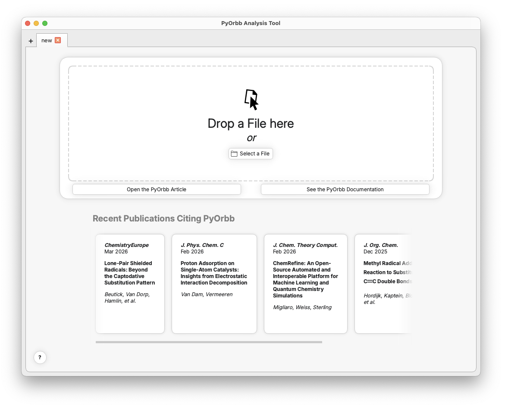
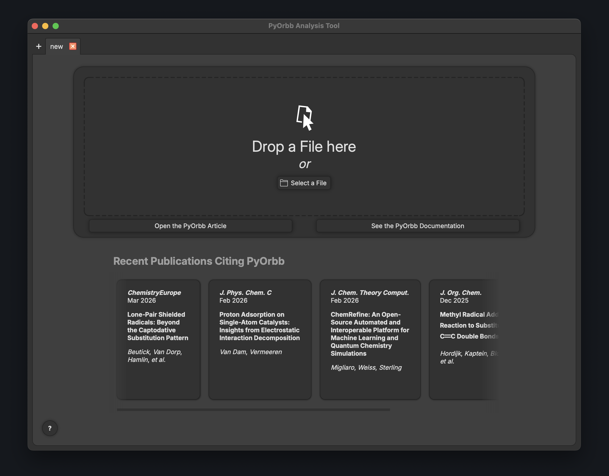
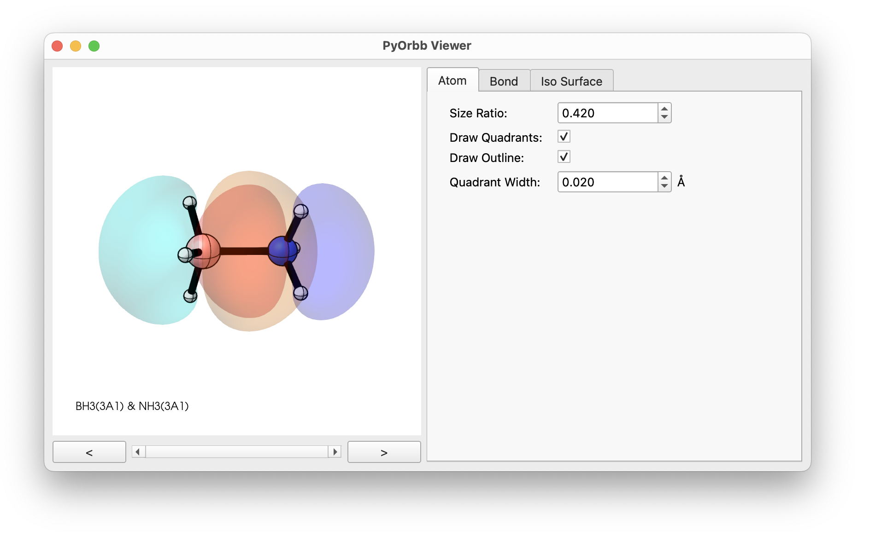
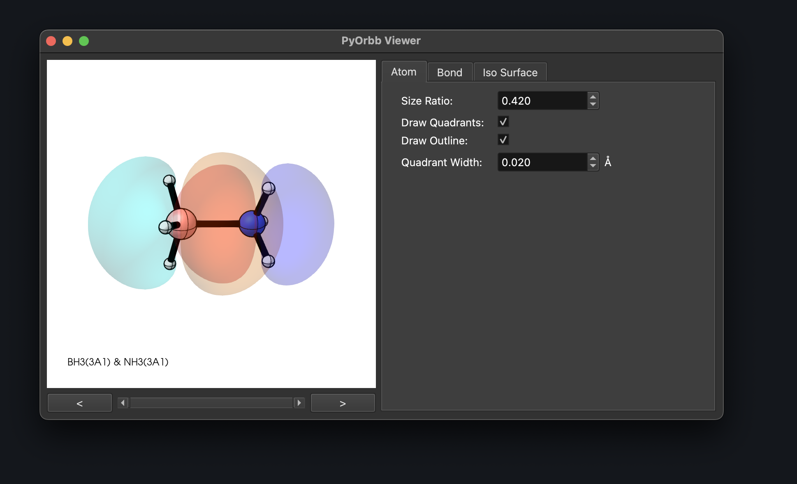
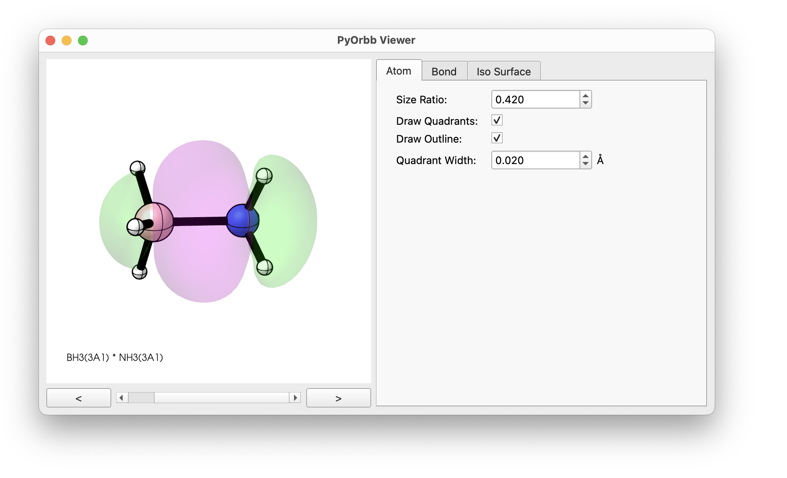
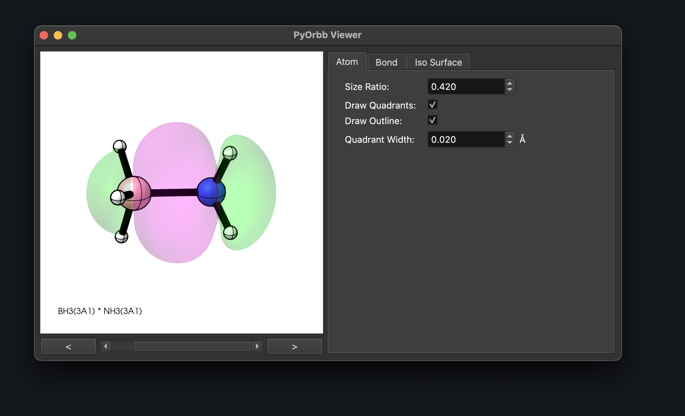

Getting Started: H3B←NH3 Lewis Adduct#
PyOrbb is a tool designed to help you perform orbital interaction analyses. It provides you with a user-interface capable of producing orbital interaction diagrams. In this tutorial we will walk through the process of performing a basic PyOrbb analysis using the GUI of PyOrbb. Throughout this tutorial we will be using the results of a calculation containing the H3N→BH3 Lewis acid-base pair, which you can download here: NH3_BH3.rkf.
See also
Click here for a tutorial on the AMS website on how to perform fragment calculations yourself.
Note
Some functionality of PyOrbb requires a valid installation of the AMS program.
Starting PyOrbb#
When you open PyOrbb you will be greeted by the welcome screen. Here you can find a link to the PyOrbb article and the documentation page. You can also see articles that have been recently published that cite PyOrbb.


Loading Calculation Results#
Step 1: Load the calculation results
Drag the NH3_BH3.rkf file into the PyOrbb window. Alternatively, click the “Select a File” button and navigate to and select the file’s location.
When a valid adf.rkf (a result file from ADF) file is provided, PyOrbb will automatically analyse the contents of the file and present you with a new screen showing the results of the analysis. The screen shows you the main orbital interaction mechanism as predicted by PyOrbb and gives you various options to obtain information or manipulate the diagram shown.
Main orbital interaction diagram generated by |PyOrbb|
This part of the GUI shows you the orbital interactions identified by PyOrbb.
The small black horizontal lines are the energy-levels of the orbitals and are arranged by the molecular species they belong to. In this case the left and right columns are for the FMOs and the middle column is for the MOs. The levels can be populated by 0, 1, or 2 electrons, indicated by the arrows, and the directions of the arrows indicate the spin they posses: pointing up corresponds to alpha-spin and down to beta-spin.
The lines between the FMOs and MOs indicate whether there is a contribution from the FMO to the MO. The brightness is determined by the Mulliken contribution between the orbitals, and the color of it indicates what kind of interaction it is. Red indicates a Pauli-repulsive interaction, green indicates an orbital interaction, grey indicates a connection participating in both Pauli-repulsive and orbital interactions, and purple indicates connections added during the santization step of the algorithm.
Interactive elements
Several elements are (double-)clickable in the diagram:
Scrolling and dragging allows you to zoom in or out and shift the diagram up or down, respectively. Right-clicking resets the diagram to its original state.
The names of the columns are double-clickable and renamble. You can also drag and drop them to reorder the columns however you like.
The y-axis can be double-clicked to manually set the axis limits.
The orbital levels and connections are clickable and will show information about them and their interaction in the Information Tab. You can hold shift to select multiple levels or connections at once.
If there are notices (warnings or errors) related to the orbitals they will have a small warning sign next to them. Clicking these will open the corresponding notice on the right side for you.
Main information sections
The information tabs show you information related to orbitals, molecules, the overall system, and any errors or warnings that were detected during loading of the calculation results. The information is organized in 3 tabs. The information can be viewed by clicking the headers inside the tabs.
Orbitals
When clicking an orbital or a connection in the main diagram, PyOrbb will display relevant information in this tab. This includes basic information such as orbital energies, overlaps, coefficients and Mulliken contributions and populations. If two interacting orbitals are selected (by using shift + click to select multiple objects at once), the details of the orbital interaction analysis are shown, including each term that went into calculating the orbital interaction or Pauli repulsive interaction ranking numbers.
System
PyOrbb provides information about the general system, the complex molecule and each of the fragments. This includes charges, spin-polarizations and coordinates of the molecules. PyOrbb also provides the energy terms from the energy decomposition analysis.
Notices
PyOrbb will give notice of any warnings or errors that it detected during the loading of a given adf.rkf file. Clicking on any exclamation marks in the diagram will also highlight the error/warning message associated with it.
See also
For an overview of all warnings and errors that PyOrbb detects, please see this page.
Setting orbital interaction ranking thresholds
The sliders are used to adjust the thresholds that PyOrbb uses to determine which interactions to include. The lower the threshold value is the more interactions are included in the main diagram.
See also
See Section 3.2 in the main article for more information about the orbital interaction ranking algorithm.
Draw Orbitals
When orbitals or connections are selected in the main diagram the Draw Orbitals button is activated. Clicking it will then show you a dropdown menu with several options for drawing the orbitals involved.
Filter
When one or more orbitals have been selected the Filter button is activated. If clicked, PyOrbb will ensure that all interactions drawn in the diagram involve the selected orbitals. Clicking the Filter button again deactivates the filter.
Energy Type
PyOrbb will attempt to gather various FMO energy types when loading the results of a calculation. By default the regular energies are used (i.e. the FMO energies in density of the complex), but other options are also available if they are present in the provided file. PyOrbb will also always provide the option to use approximate effective energies.
See also
See Section S1 in the supporting information for more information about the FMO energy types and their uses.
Orbitals
One can also manually include or exclude specific orbitals from the interaction. This also includes the option to include/exclude all orbitals of specific spin types or irreducible representations. PyOrbb also provides information about all orbitals included in the system and also gives the option to draw them.
Producing the main output of |PyOrbb|
When you are satisfied with the diagram shown you can export the main orbital interaction diagram using the Save Figure button. PyOrbb also provides the option to generate a spreadsheet containing an overview of information about the calculation which can be very usefull for manual analysis of the data.
Visualisation and Obtaining Data#
Having loaded the calculation, we can now start visualizing and obtaining data about the orbitals in our system.
Drawing Orbitals
Let’s start by visualizing the orbitals involved in the mixing of the occupied NH3(3A1) and the virtual BH3(3A1) orbitals.
Step 2: Visualize NH3(3A1) and BH3(3A1)
Hold down the shift key and click on the energy levels of the NH3(3A1) and BH3(3A1) orbitals. Click the “Draw Orbitals” button to open the visualization dropdown menu and select the bottom option with the green “&” sign.
Note
To draw orbitals, PyOrbb needs access to the densf program provided by AMS. Set the path to your AMS installation using


PyOrbb should open a window showing you the two overlaid orbitals. It should be obvious why this interaction was deemed the most important by PyOrbb, the orbitals clearly have a very overlap, especially in the region between the boron and nitrogen atoms. PyOrbb also gives the option to visualize the overlap directly.
Drawing Orbital Overlap
Step 3: Visualize the overlap between NH3(3A1) and BH3(3A1)
Again hold down the shift key and click on the energy levels of the NH3(3A1) and BH3(3A1) orbitals. Click the “Draw Orbitals” button to open the visualization dropdown menu and select the one to last option with the brown “S” sign.


PyOrbb again should open a window, but this time shows the product of the selected orbitals. Purple shows regions with constructive overlap, while green shows destructive overlap. While there is both constructive and destructive overlap between the two orbitals, the constructive overlap between the boron and nitrogen atoms dominates, and should lead to a large value for the overlap.
Obtaining the Orbital Overlap values
PyOrbb also reports the actual value of the overlap integral between two orbitals of interest. In this case the overlap is equal to 0.353.
Step 4: Obtain the overlap value between NH3(3A1) and BH3(3A1)
Again hold down the shift key and click on the energy levels of the NH3(3A1) and BH3(3A1) orbitals. On the right side click the “Orbitals” tab to view the information related to the selected orbitals. Click the header that states NH3(3A1) ± BH3(3A1). Observe the value given for Sij.